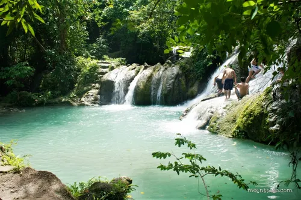
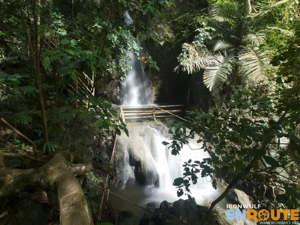

Davao’s Best Waterfalls: A Nature Lover’s Guide
Davao is home to some of the most breathtaking waterfalls in the Philippines, offering a perfect escape for nature lovers, adventure seekers, and photographers. Whether you're looking for towering cascades, serene jungle pools, or hidden nature spots, this guide will introduce you to the best waterfalls near Davao and how to experience them to the fullest.

Hagimit Falls
Hagimit Falls is a captivating natural waterfall attraction nestled on Samal Island, within the Island Garden City of Samal, Davao del Norte, Philippines. This picturesque destination is precisely located at the geographic coordinates 7.0669958, 125.7253312. For those seeking to find it, the specific address is marked as 3P8G+Q4W, Samal, Davao del Norte. The falls are a testament to the island's natural beauty, offering visitors a refreshing escape into a lush, tropical environment.

Tagbaobo Falls
Tagbaobo Falls, also affectionately known by its local name, Magongawon Falls, is a secluded natural wonder located in the Island Garden City of Samal, Davao del Norte, Philippines. This enchanting waterfall is discreetly situated in the vicinity of the Coast Guard Sub-Station Tagbaobo, with its precise geographical coordinates being 7.0032961, 125.7830675. The falls are increasingly being recognized as a significant scenic spot on the island, frequently appearing in travel guides and video blogs that aim to showcase Samal's diverse natural attractions and hidden treasures.
Aliwagwag Falls
Aliwagwag Falls, a spectacular multi-tiered waterfall, is a natural wonder situated in Cateel, Davao Oriental. It is widely acclaimed as one of the highest and most beautiful waterfalls in the Philippines, boasting an impressive 84 distinct cascades that create a breathtaking spectacle of cascading water. The falls are the centerpiece of the well-developed Aliwagwag Falls Eco Park, which provides visitors with a range of activities designed to immerse them in the natural beauty of the area. Guests can enjoy refreshing swims in the natural pools, experience unique natural rock massages, and for the adventurous, take a thrilling ride on the 680-meter zip line, which offers panoramic views of the falls and surrounding landscape (note: zip line availability is subject to maintenance).
Reference: davaodelnorte-waterfalls-in-DavNor